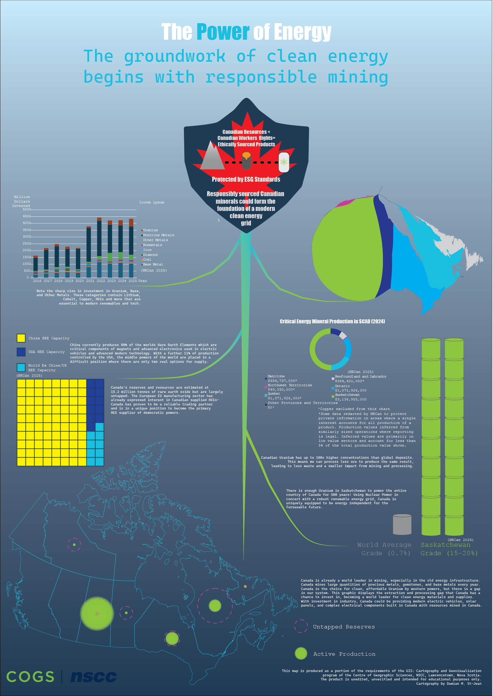

This project represents a highly advanced synthesis of thematic cartography, quantitative data visualization, and commercial graphic design. The core challenge involved communicating dense, complex datasets through a singular, cohesive, multi-element poster.
This infographic tells the story of Canada's place in the clean energy era through a combination of maps and statistical visualizations. The layout was rigorously executed in Adobe Illustrator, restricting typographic variance and engineering a press-ready CMYK document suitable for large-format commercial printing.